Soft Robotics Documentation
Interdisciplinary Project Winter Semester 2018/2019
Rhine-Waal University of Applied Sciences FabLab Kamp-Lintfort
Group:Fabrication for Care
Week 9:Introduction to Soft Robotics

sourcehttps://www.google.com/search?
q=soft+robotics&source=lnms&tbm=isch&sa=X&ved=0ahUKEwjtz6G1gZrfAhWMmIsKHdWPAU4Q_AUIDigB&biw=1280&bih=539#imgrc=vhpL-eNQMz8kjM::
What is Soft robotics?Soft Robotics is the specific subfield of robotics dealing with constructing robots from highly compliant materials, similar to those found in living organisms.
Soft robotics draws heavily from the way in which living organisms move and adapt to their surroundings. In contrast to robots built from rigid materials, soft robots allow for increased flexibility and adaptability for accomplishing tasks, as well as improved safety when working around humans. These characteristics allow for its potential use in the fields of medicine and manufacturing.
The bulk of the field of soft robotics is based upon the design and construction of robots made completely from compliant materials, with the end result being similar to invertebrates like worms and octopuses.Soft Robotics is the specific sub-field of robotics dealing with constructing robots from highly compliant materials, similar to those found in living organisms. Similarly, soft robotics also draws heavily from the way in which these living organisms move and adapt to their surroundings. This allows scientists to use soft robots to understand biological phenomena using experiments that cannot be easily performed on the original biological counterparts. In contrast to robots built from rigid materials, soft robots allow for increased flexibility and adaptability for accomplishing tasks, as well as improved safety when working around humans.
source:https://en.wikipedia.org/wiki/Soft_robotics
Designing and manufacturing of the Soft Robotics
Conventional manufacturing techniques, such as subtractive techniques like drilling and milling, are unhelpful when it comes to constructing soft robots as these robots have complex shapes with deformable bodies. Therefore, more advanced manufacturing techniques have been developed. Those include Shape Deposition Manufacturing (SDM), the Smart Composite Microstructure (SCM) process, and 3D multimaterial printing.
SDM is a type of rapid prototyping whereby deposition and machining occur cyclically. Essentially, one deposits a material, machines it, embeds a desired structure, deposits a support for said structure, and then further machines the product to a final shape that includes the deposited material and the embedded part. Embedded hardware includes circuits, sensors, and actuators, and scientists have successfully embedded controls inside of polymeric materials to create soft robots, such as the Stickybot and the iSprawl.
SCM is a process whereby one combines rigid bodies of carbon fiber reinforced polymer (CFRP) with flexible polymer ligaments. The flexible polymer act as joints for the skeleton. With this process, an integrated structure of the CFRP and polymer ligaments is created through the use of laser machining followed by lamination. This SCM process is utilized in the production of mesoscale robots as the polymer connectors serve as low friction alternatives to pin joints.
3D printing can now be used to print a wide range of silicone inks using Robocasting also known as direct ink writing (DIW). This manufacturing route allows for a seamless production of fluidic elastomer actuators with locally defined mechanical properties. It further enables a digital fabrication of pneumatic silicone actuators exhibiting programmable bioinspired architectures and motions. A wide range of fully functional softrobots have been printed using this method including bending, twisting, grabbing and contracting motion. This technique avoids some of the drawbacks of conventional manufacturing routes such as delamination between glued parts. Another additive manufacturing method that produces shape morphing materials whose shape is photosensitive, thermally activated, or water responsive. Essentially, these polymers can automatically change shape upon interaction with water, light, or heat. One such example of a shape morphing material was created through the use of light reactive ink-jet printing onto a polystyrene target . Additionally, shape memory polymers have been rapid prototyped that comprise two different components: a skeleton and a hinge material. Upon printing, the material is heated to a temperature higher than the glass transition temperature of the hinge material. This allows for deformation of the hinge material, while not affecting the skeleton material. Further, this polymer can be continually reformed through heating.
source:https://en.wikipedia.org/wiki/Soft_robotics
Controlling and Application
Soft robots can be implemented in the medical profession, specifically for invasive surgery. Soft robots can be made to assist surgeries due to their shape changing properties. Shape change is important as a soft robot could navigate around different structures in the human body by adjusting its form. This could be accomplished through the use of fluidic actuation.
Soft robots may also be used for the creation of flexible exosuits, for rehabilitation of patients, assisting the elderly, or simply enhancing the user’s strength. A team from Harvard created an exosuit using these materials in order to give the advantages of the additional strength provided by an exosuit, without the disadvantages that come with how rigid materials restrict a person’s natural movement.
Traditionally, manufacturing robots have been isolated from human workers due to safety concerns, as a rigid robot colliding with a human could easily lead to injury due to the fast-paced motion of the robot. However, soft robots could work alongside humans safely, as in a collision the compliant nature of the robot would prevent or minimize any potential injury.
source:https://en.wikipedia.org/wiki/Soft_robotics
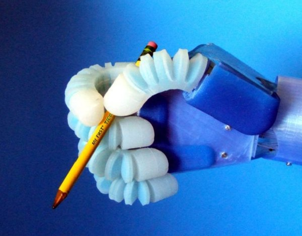
source:https://www.google.de/search?q=soft+robotics&rlz=1C1EKKP_enDE824DE824&source=lnms&tbm=isch&sa=X&ved=0ahUKEwjLve3dgJrfAhVkkosKHbUtBXIQ_AUIDigB&biw=1280&bih=539#imgrc=Vq-3V58g-xCEyM:
Our group of Fabrication for Care was introduced what the Soft Robotics actually are.What is the purpose of them and why we need this.It is really important to understand that soft robotics are implemented in every field of the humanity.Starting at the special assistive devices,including wearable projects,lasting in the medical purposes.We had the great opportunity to follow the process of making such a tools and to try it from ourselves,which on the other hand will be useful for our final project.
Process of making Soft Robotics models
- Step 1:
At first is really important to prepare your workbench in which you will work.Applying an apron and gloves before starting is very important in order not to stain the clothes og the material.
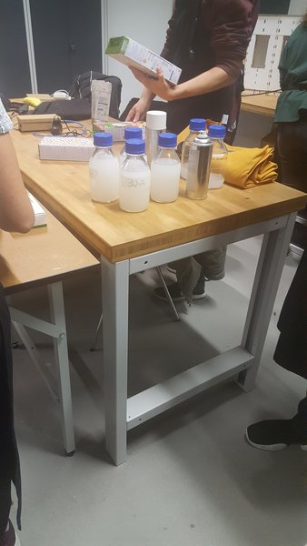
- Step 2:
Second step is to choose the form,the design of your soft robotic model,in addition this shaped are already modelled in program and 3D printed.
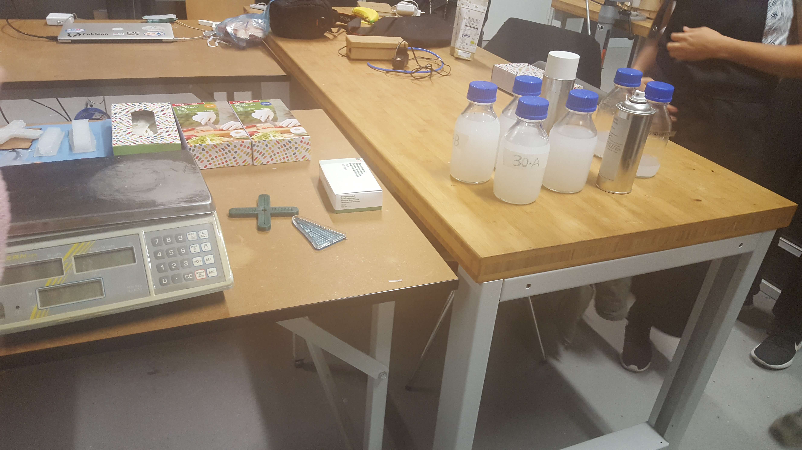
- Step 3:
Now is the turn of preparing the mixture of our material which we will use.It is transparent sticky fluid,which is put in glass bottles,and it has to be mixtured proportionally in right way.We need to use scales,and to measure the fluid 1:1 mixture.In addition,you can also choose to put also color inside if you want to be not transparent.
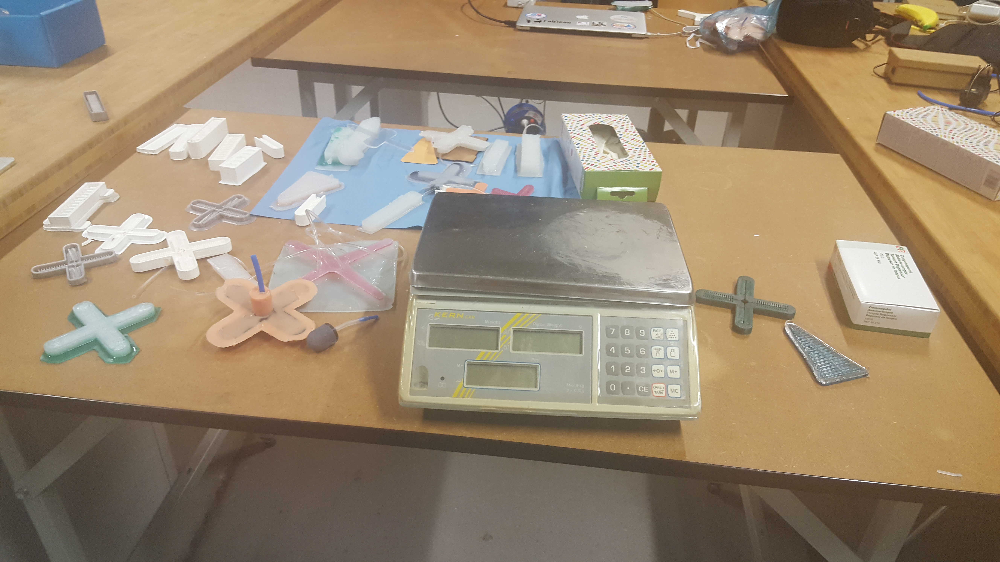
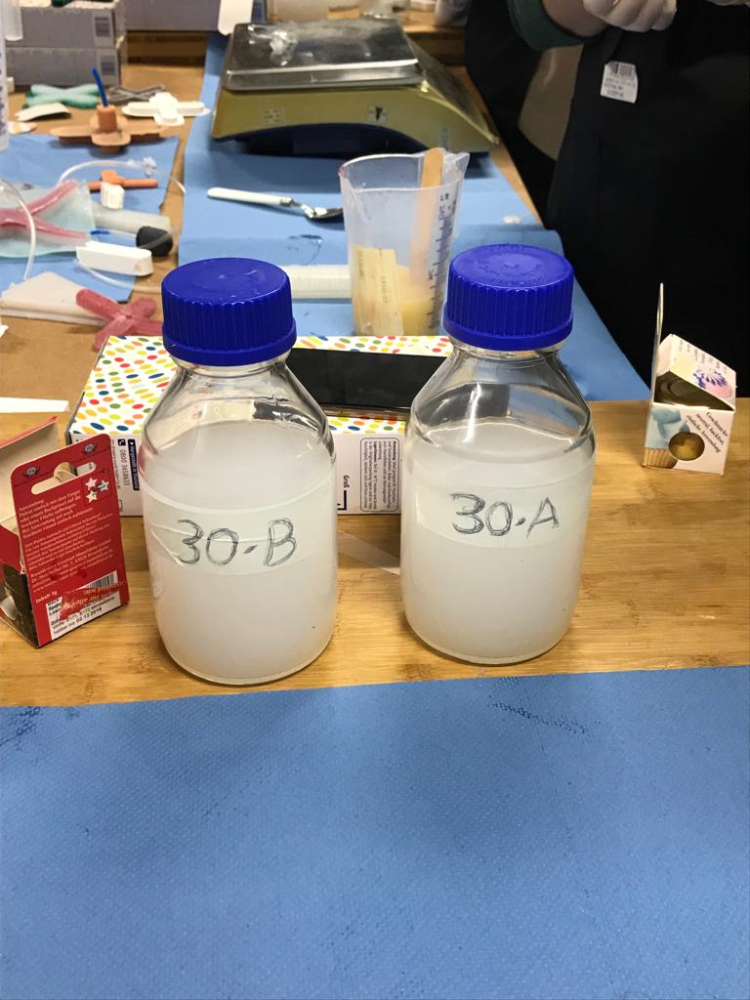
- Step4:
Meanwhile,we are starting with the molding and casting the material inside the shapes.But,at first we use a special spray to sprinkle the model,and after that we mold the fluid(silicon) inside.It has to be done very carefully to do not overlap the model.After doing this we have to also put the rest of our material in another square shape and just casting all over it.Then we check for any bubbles which can appear and remove them.
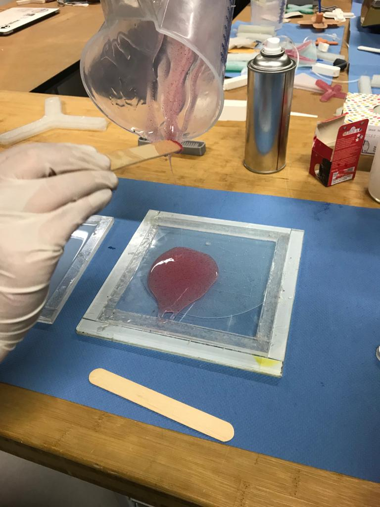
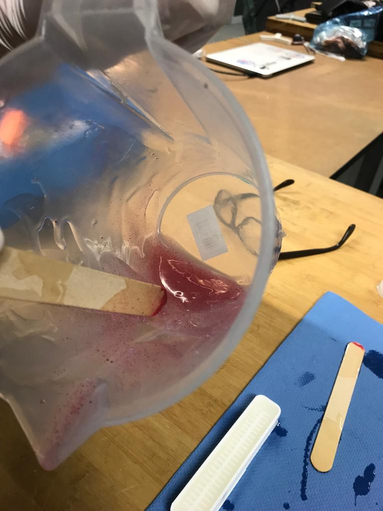
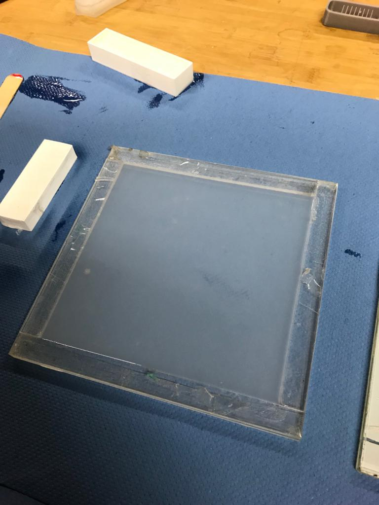
- Step5:
At last,when we are ready with our casting shapes,we put them in heated bed of 50 degree to speeed up the process for 2-3 hours.And after that they are ready to be removed from the shapes and apply them in any usage which we choose.
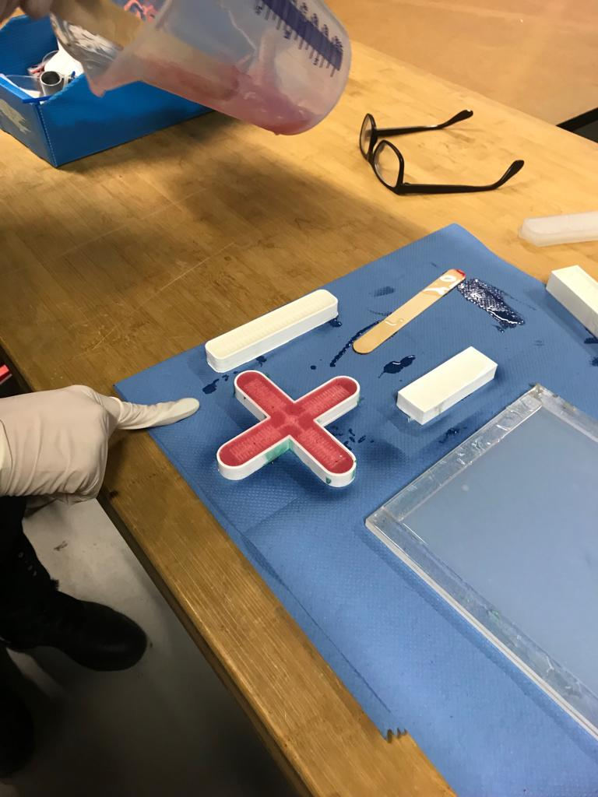
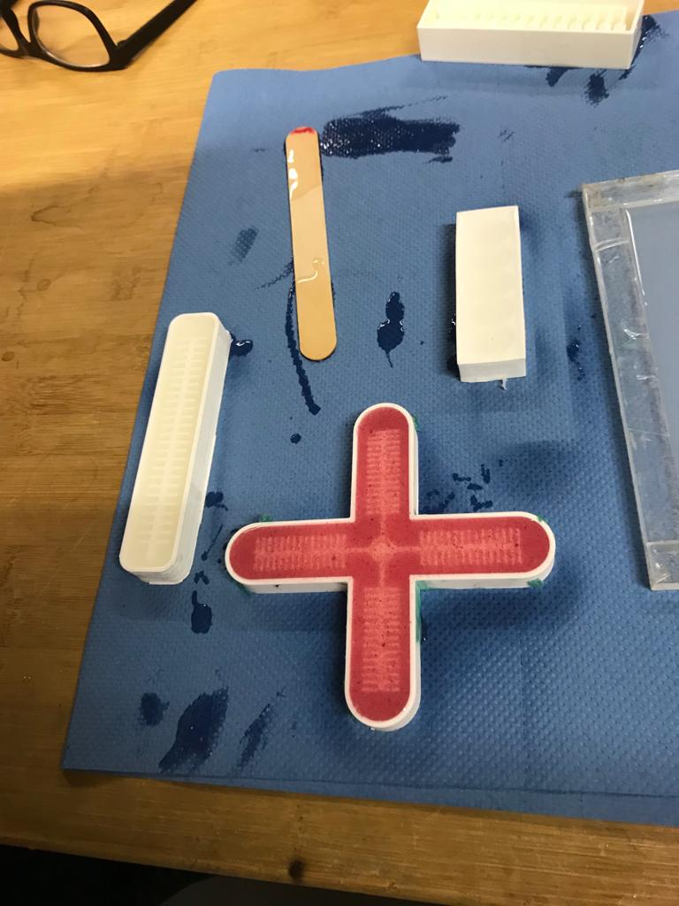

Soft robotic model/Inflatables
Each person in our group of Fabrication for Care had the opportunity to create his/her own shape of soft robotic model.It was really interesting and exiting experience,even simple one.Everybody has to draw a shape on a paper at first and then to cut it ,to have holes inside ,especially where it can be putted the silicon pipe where you can blow out and to see the shape form.
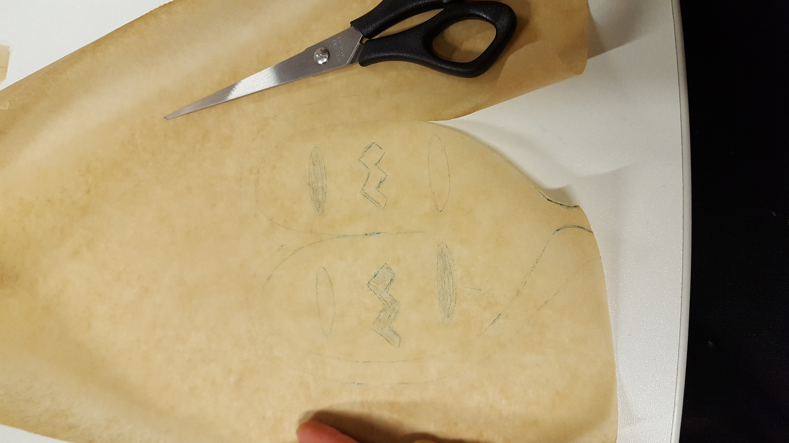
After that I choose the material which i will use and I cutted a little bit bigger than the paper in both sides and then I put the paper between the two materials and using the pressing machine it provide me a shape.After that I put the silicon pipe inside the hole and blow it out and it was shown a shape which I choose,an heart.
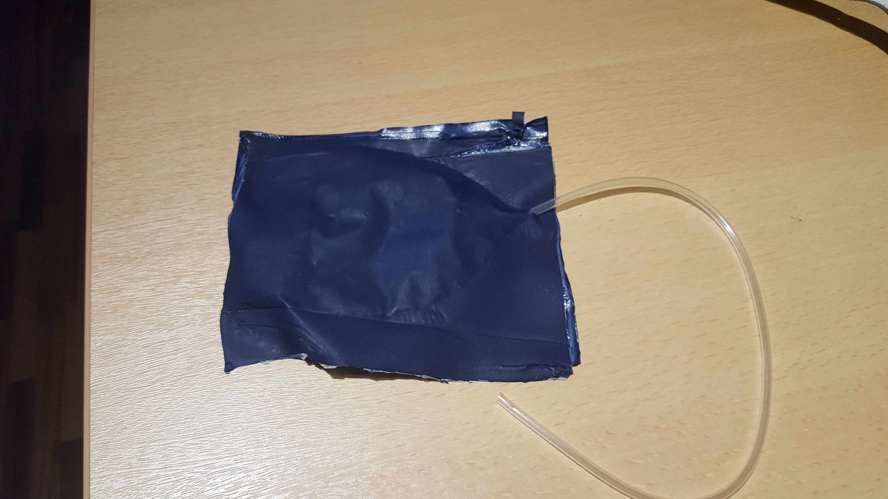
The materials using for inflatables can be different,according to their density,colour and type.It is important before to put it in the machine,to make sure that no air will come inside the inflatables,and to make a pipe,when make an air after that inside,in order to pump it.
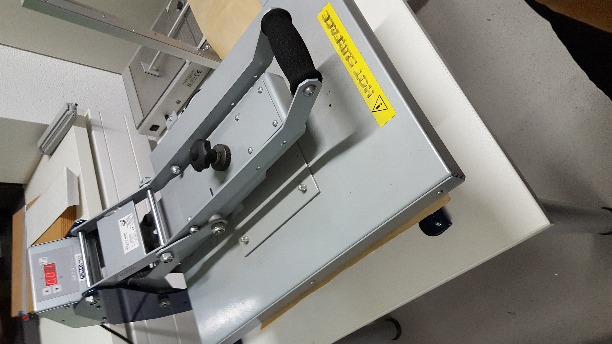
The machine has to be set up according to the material type.It is working approximatelly at 150 degree heating for about 15 seconds and reach high level of temperature.
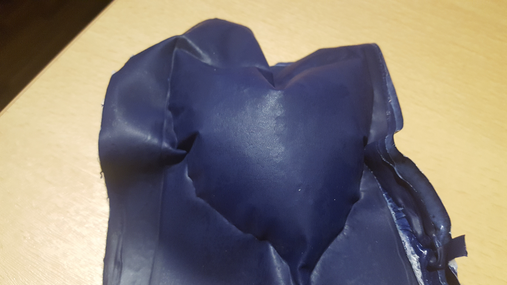
This is the finished inflatable,in form of heart.